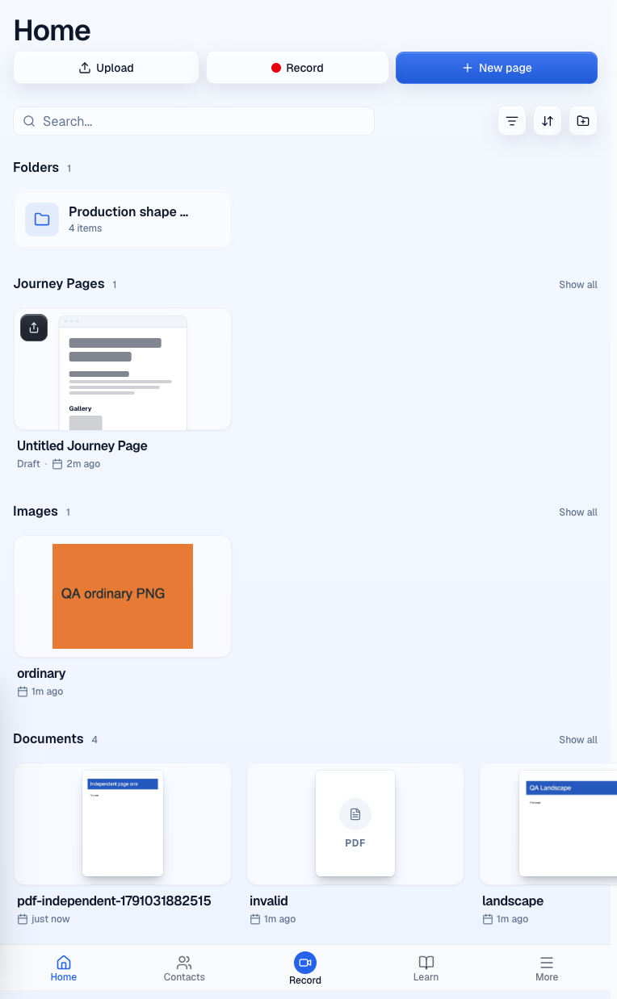
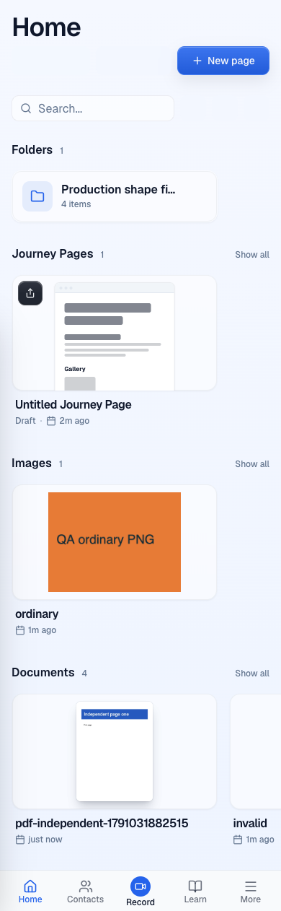

VERIFIED · PASS+NOTES · 3 October 2026
Preview https://pr-994.clarity-video.workers.dev
Head ee27092c292980ea4836fec24f7ca580032750cf
Base e6b68052a8481a411b57436c3e0a2ccd46b55e4e
Stable patch 22a32b54af522d94a022c8d4ece01ccaaab01c50
| Check | Result |
|---|---|
| Authenticated doctor and exact-head preview CI | Pass |
| Actual UI PDF upload, first page and reload persistence | Pass |
| Home desktop and mobile page fit | Pass, contain and original aspect ratio |
| Browsing requests | Stored image only. No source PDF or renderer requests. |
| Open original through UI | 200 application/pdf, exact 693 uploaded bytes |
| Private thumbnail | Signed 200 image/webp. Unsigned 403. |
| Adjacent PNG | Pass |
| Own fixture cleanup | Deleted through API, subsequent read 404 |
The inspected base code always displays a document placeholder. The head uploads and stores a private first-page image and preserves opening the original. These captures show the deployed head. The parent commit was not run, and the invalid-file placeholder is not a historical before screenshot.


The completed primary report was audited. Raw attachment responses, replay and wrong-source refusals, original-file hashes, all four Home layout records, both picker widths, rename and Open results agree with the final screenshots and captions. Earlier offscreen paint captures are diagnostic only. The final scrolled and fresh-browser captures show both page orientations.
No browsing console errors. The upload returned a stored WebP image with dimensions 618 by 800. After reload, the browser fetched that image without fetching or parsing the source PDF. Raw authenticated API records and browser state remain private.
Production backfill was not run because R2 credentials are missing. Physical phones and customer PDFs were not tested. The existing placeholder-extension quirk and the backfill signal exit-status race remain documented follow-ups. The primary native PDF popup logged one unidentified-resource 404; the source URL returned 200 and exact bytes, and the independent Open check also passed. Native PDF viewer rendering is not claimed. No code edits, deployment or merge were performed.